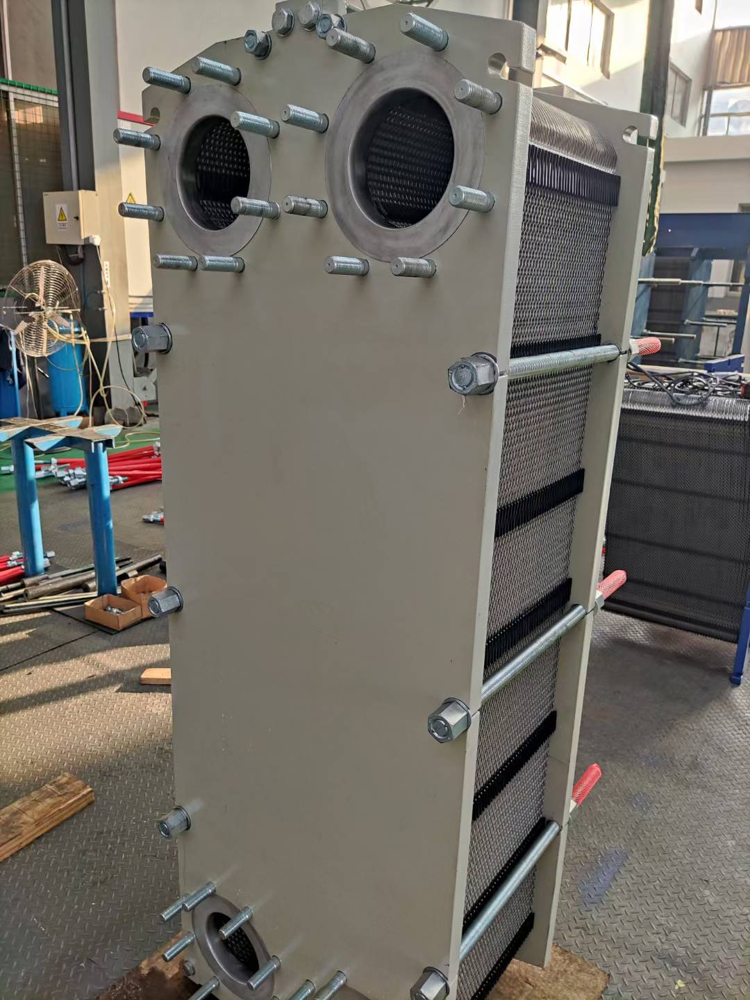

← 返回首页
板式换热器基础：工作原理、结构与核心部件
什么是板式换热器
板式换热器（Plate Heat Exchanger，PHE）是一种由一系列波纹金属板片叠装而成的高效换热设备。板片之间形成窄矩形通道，冷热两种流体在通道内交替流动，通过板片进行热量交换。
相比传统的管壳式换热器，板式换热器具有传热效率高、占地面积小、重量轻、易清洗维护等优点，被广泛应用于暖通空调、食品饮料、化工、电力、船舶、制药等行业。

工作原理
板式换热器的换热过程可以概括为：
- 冷热流体分别由设备的固定压紧板和活动压紧板上的接管进入
- 通过板片角孔进入各自的流道
- 在波纹板片形成的通道内流动
- 热量从高温流体通过薄金属板传递给低温流体
- 换热后的流体从出口接管流出
热流体入口 ──┐ ┌── 冷流体出口
│ 波纹 │
│ 板片 │
│ 通道 │
热流体出口 ──┘ └── 冷流体入口
由于板片很薄（通常 0.5~1.0mm），冷热流体之间的热阻很小，因此传热效率很高。
核心结构组成
1. 传热板片
板片是板式换热器的核心部件，通常采用不锈钢（304、316、316L）、钛合金、镍基合金等材料制成。板片表面压制成特殊波纹，常见波纹形式有：
- 人字形波纹 — 最常用，扰流效果好，传热效率高
- 水平平直波纹 — 压降小，适合含颗粒介质
- 球形波纹 — 抗结垢能力强
板片波纹的主要作用：
- 增加流体湍流程度，提高传热系数
- 增强板片刚度，提高承压能力
- 形成多点支撑，避免板片变形
2. 密封垫片
垫片安装在板片周边和角孔周围，用于隔离不同流体通道，防止串流和泄漏。常用材质：
| 材质 | 代号 | 适用温度 | 适用介质 |
|---|---|---|---|
| 丁腈橡胶 | NBR | -20~135°C | 水、矿物油 |
| 三元乙丙橡胶 | EPDM | -50~160°C | 热水、蒸汽、弱酸碱 |
| 氟橡胶 | FKM/Viton | -40~200°C | 酸、碱、有机溶剂 |
| 氯丁橡胶 | CR | -40~120°C | 海水、冷却水 |
3. 压紧板与夹紧螺栓
- 固定压紧板 — 固定在支架上，连接接管
- 活动压紧板 — 可沿导杆移动，便于拆装清洗
- 夹紧螺栓 — 将所有板片和垫片压紧，保证密封
4. 上导杆与下导杆
用于固定和定位板片，保证板片组能整齐叠装。

传热性能关键参数
传热系数 K 值
板式换热器的传热系数通常在 3000~7000 W/(m²·K)，远高于管壳式换热器（通常 1000~2500 W/(m²·K)）。这主要得益于：
- 板片很薄，金属热阻小
- 波纹结构产生强烈湍流
- 流程短，流体分布均匀
对数平均温差
板式换热器通常采用逆流或逆流为主的流动方式，平均温差较大，换热效率高。
压降
由于通道窄、波纹扰流强，板式换热器的压降相对较大。设计时需要在传热效率和压降之间取得平衡。
板式换热器的优势与局限
优势
- 传热效率高，结构紧凑
- 换热面积可灵活增减（增减板片）
- 易于拆卸清洗
- 占地面积小，节省空间
- 介质滞留量小，热惯性小
局限
- 承压能力一般低于管壳式（通常 <2.5MPa）
- 不耐高温（一般 <200°C）
- 通道窄，不适合含大量纤维或颗粒的介质
- 垫片材质限制，某些强腐蚀介质需要特殊板片
总结
板式换热器凭借高效、紧凑、易维护的特点，已经成为现代工业换热的主流选择。理解其工作原理和结构组成，是正确选型、安装和维护的基础。在实际工程中，还需要结合介质特性、温度压力、空间限制等因素，选择合适的品牌型号和板片垫片材质。